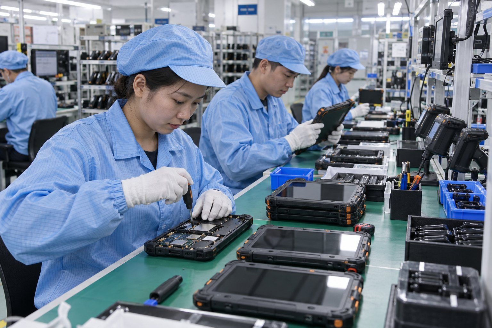

What Decides the Price of a Biometric Tablet
Quick answer: A biometric tablet is quoted as a configured OEM build, so there is no catalogue price. Seven things move it: the platform and screen size, the capture modules fitted, memory and storage, the certification your destination market requires, tooling for a custom housing, the software and SDK scope, and the quantity. Published commercial terms are a minimum order quantity of 2 units, a sample in about three days and mass production about 25 days from sample approval. Certification and tooling are what add calendar time, not unit price alone.
Price questions on identity hardware usually arrive before the specification is settled, which is why the honest answer is a list of variables rather than a number. Here is what actually moves a quotation.

Why there is no price list
A biometric tablet is not a box pulled from a shelf. The capture module is fitted before the housing closes and wired to the mainboard, so the device is assembled around the modules your project needs. Two quotations for "a 10-inch biometric tablet" can differ by a wide margin because one carries a capacitive fingerprint sensor and an offline ID card reader while the other carries an optical sensor, an NFC reader and a 2D scan engine, and because only one of them has to be tested against the conformity rules of the market it ships to.
A published list price would have to cover the most expensive configuration anyone might order, which means every buyer pays for modules they did not ask for. Quoting per configuration is slower but it is the only version that survives contact with a real purchase order.
The seven variables in a quotation
| Variable | What changes | How much it tends to move the number |
|---|---|---|
| Platform and screen size | 8-inch or 10-inch rugged tablet, 5-inch or 6-inch handheld, Android or Windows, chipset and memory tier | Large — it sets the floor for everything else |
| Capture modules | FAP10 capacitive or FAP20 and FAP30 optical fingerprint, ID card reader in offline or online form, NFC, 2D engine from Newland, Honeywell or Zebra, liveness camera | Large — usually the single biggest swing after the platform |
| Memory and storage | 3 GB + 32 GB up to 6 GB + 128 GB, and the Android image that has to fit | Modest |
| Certification scope | GMS where the specification lists it, the Ministry of Public Security certification on the capacitive fingerprint module, IP65 or IP67 ingress per model, plus the radio, safety and environmental approvals of the destination market | Moderate, and it is per market, not per unit |
| Tooling and mechanical design | Existing housing with your colour and branding, or a new housing, bracket, vehicle cradle or sealing level | Zero for OEM, significant for ODM |
| Software and SDK scope | Android trimming, kiosk mode, boot logo, pre-installed applications, MDM enrolment, integration with your backend | Moderate, and it scales with engineering time |
| Quantity | Pilot at the minimum order quantity, or a production run | Large — setup, module procurement and test time spread across the run |
Two of those are decided by your programme rather than by the hardware: the certification your destination market insists on, and the record format your fingerprint profile has to produce. Both are cheaper to settle at the specification stage than to retrofit after tooling.
What a quotation covers
A quotation comes back against the build, not against a model name. It covers the module set, the firmware and Android image, the software and SDK scope, and the documentation agreed for your market. Spare parts, accessories such as vehicle cradles and charging docks, and the warranty scope are listed separately so you can see what you are declining as well as what you are buying.
What it does not cover is anything we have not been told about. A project that turns out to need offline operation after the order is placed is a different build, and the honest place to discover that is the feasibility stage, not the production line.
Commercial terms we publish
- Minimum order quantity: 2 units, which covers evaluation and pilot builds
- Sample: about 3 days
- Mass production: about 25 days from sample approval
- Capacity: a 2,000 m² facility in Shenzhen with three production lines and capacity of 10,000 units per month
- Shipment: factory direct from Shenzhen, every unit serialised and traceable to its production record
Those figures are published because buyers plan around them. A pilot of two units and a national rollout sit on very different schedules, and the difference is not the assembly time.
What adds calendar time rather than cost
Three things regularly surprise procurement teams, and none of them is the factory:
Certification for the destination market. Testing against the right target takes its own slot in a laboratory calendar, and re-testing after a change costs more than scoping it correctly the first time.
Tooling for a new housing. An ODM build has to go through mechanical design and tooling before the first unit exists. That is a fixed block of time no matter how small the first order is.
Software integration. Driving a fingerprint sensor from your own application is straightforward when the SDK scope is agreed up front, and slow when the output format is discovered after delivery.
How to get a number you can plan with
Send the following and the reply comes back as a platform, a module set and a lead time rather than a range:
- The workflow — what is captured, who verifies it, and what record has to be produced
- Whether the identity check must run offline
- Fingerprint profile, card type or credential standard in scope
- Operating environment and mounting — counter, vehicle, handheld or kiosk
- Quantity, destination market and the certification your market requires
- Software, SDK or integration support required
If you are still choosing between form factors, Biometric Tablet or Biometric Handheld Terminal sets out which one fits which workflow, and it is worth settling before you ask for a price on two different platforms.
Frequently asked questions
Why is there no price on the website?
Every unit is built as an OEM configuration, so the price depends on the module set, the certification your market requires, the tooling and the quantity. A list price would have to be either wrong or padded. Send the workflow and quantity and the quotation comes back against your actual build.
What is the minimum order quantity?
The published minimum order quantity is 2 units, which covers evaluation and pilot builds. Unit cost falls with quantity because module procurement, line setup and test time are amortised across the run.
How long does a first order take?
A sample build takes about three days and mass production about 25 days from sample approval, both published figures. Certification for your destination market and tooling for a custom housing run on their own clocks and are what usually extend a first order.
Does certification add to the cost?
Yes, and it is scoped into the project rather than added afterwards. The conformity work a destination market needs — GMS where the specification lists it, radio and safety approvals, the Ministry of Public Security certification on the capacitive fingerprint module — is agreed at the quotation stage so the build is tested once against the right target.
Does a custom housing change the price?
Yes. An OEM build keeps the existing housing and changes the module set, which is the cheaper and faster route. An ODM build adds mechanical design and tooling for a new housing, colour or mounting, which carries tooling cost and a longer schedule but is the only way to get a device that is yours alone.
What do you need in order to quote?
The workflow, whether the check must run offline, the fingerprint profile or card type in scope, the operating environment and mounting, the quantity and destination market, and any software or SDK integration needed. That is enough to name the platform, the modules and the lead time.
Tell Us Your Programme
Send the workflow, the quantity and the market, and we will come back with the platform, the module set and the lead time.